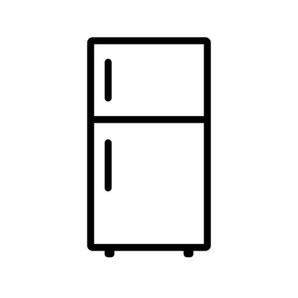

Canned Goods
- Black beans
- Kidney beans
- Corn
- Soup
Dry Goods
- Brown Rice
- White Rice
- Popcorn Kernels
- Oats
Fridge Items
- Veggies
- Broccoli
- Cauliflower
- Spinach
- Lettuce
- Bell Peppers
- Carrots
- Protein
- Tofu
- Tempeh
Freezer Items
- Frozen Fruit
- Strawberries
- Peaches
- Frozen Veggies
- Spinach
- Corn
- Peas
- Frozen Treats
- Ice Cream
- Popsicles
